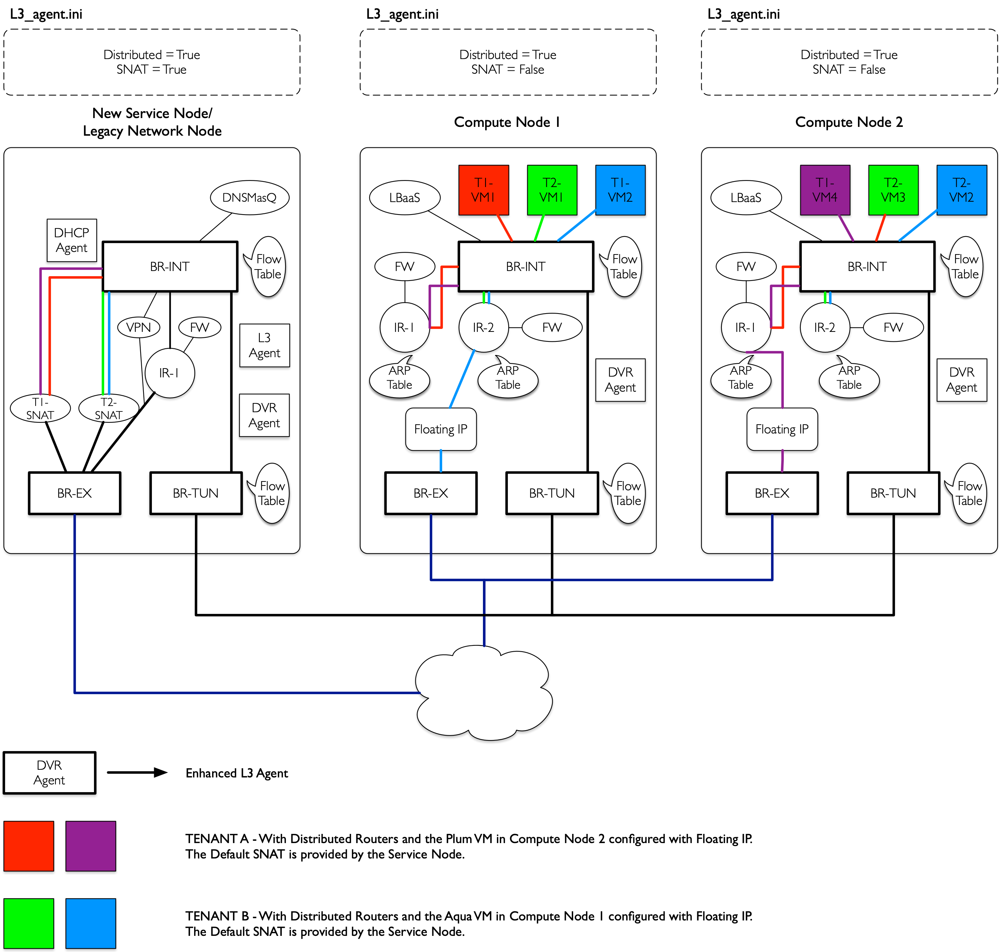
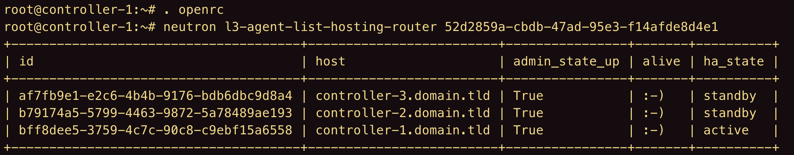
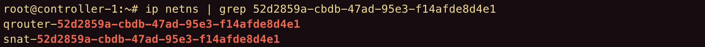
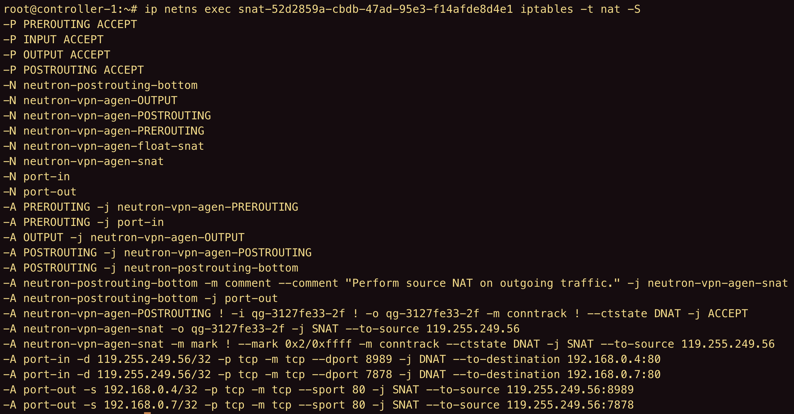
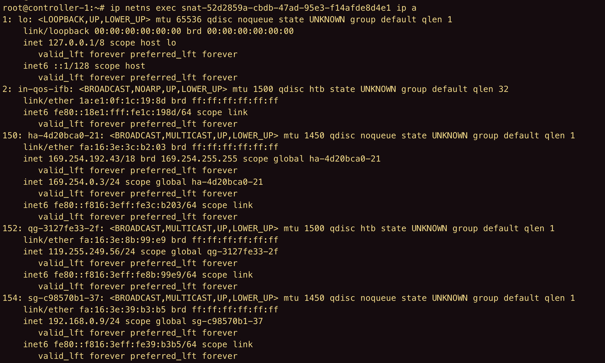
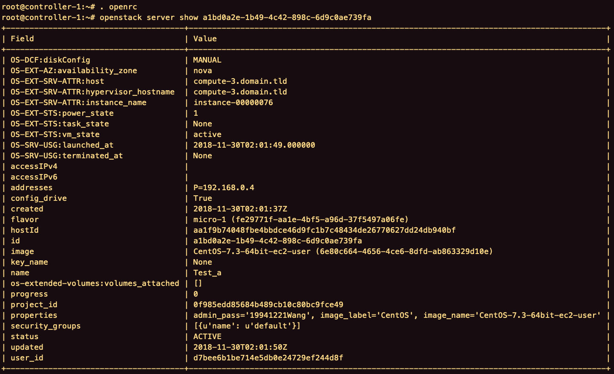
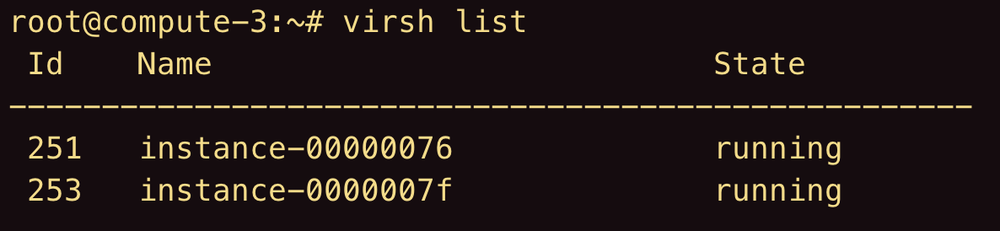
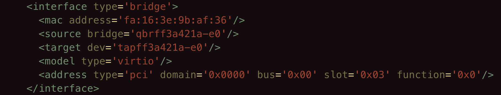
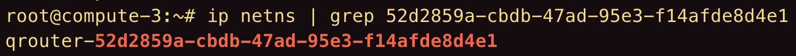
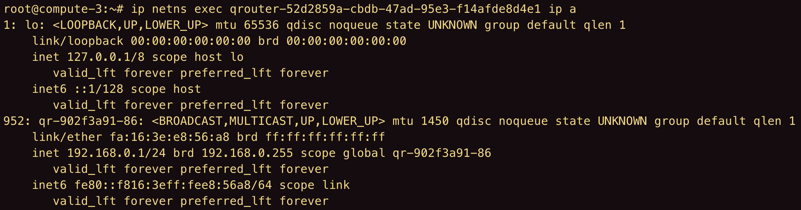

租户T2在外部通过默认的SNAT网关访问内部子网的VM1。此时，网络节点上的T2-SNAT起到路由器的作用。
控制节点
找到路由器位于的控制节点，并切换到对应节点。
1 | source .openrc |

找到路由器的网络命名空间。
1 | ip netns | grep [router-id] |

查看规则
进入snat网络命名空间，查看端口转发的规则是否被添加。
1 | ip netns exec snat-[router-id] iptables -t nat -S |

抓包测试
查看snat网络命名空间中的网卡设备。
1 | ip netns exec snat-[router-id] ip a |

利用tcpdump抓取相应网卡设备上的数据包。
1 | ip netns exec snat-[router-id] tcpdump -i [device-name] -n |
计算节点
抓包测试
首先在控制节点上找到虚拟机所在的计算节点。
1 | . openrc |

切换到虚拟机所在的计算节点，并找到对应的虚拟机。
1 | virsh list |

找到虚拟机对应的tap设备和qvr设备。
1 | virsh edit [vm-id] |

利用tcpdump抓取tap设备和qbr设备上的网包。
1 | tcpdump -i tap-[xxxx] -n |
找到qrouter的网络命名空间。
1 | ip netns | grep [router-id] |

查qrouter网络命名空间中的网卡设备。
1 | ip netns exec qrouter-[router-id] ip a |

利用tcpdump抓取qr网卡上的网包。
1 | tcpdump -i qr-[xxxx] |